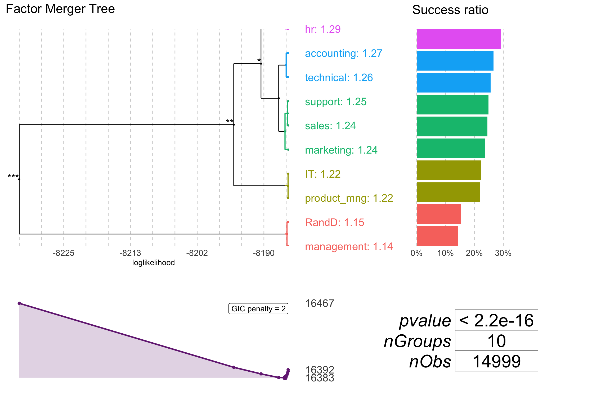

3.2 Feature importance
Explainers presented in this chapter are designed to better understand the global structure of a black box. Which variables are the most important? How do they influence the final result of a model?
3.2.1 Drop-out plots
Variable drop-outs are calculated via permutations. Simply the loss function is is compared between the full model and the model with single variable being permuted.
As a additional point for comparison a _baseline_ is calculated as a loss in model with permuted outcomes. This shall be highest possible loss.
Let’s see how it’s working for a random forest model.
library("DALEX")
library("breakDown")
library("randomForest")
HR_rf_model <- randomForest(left~., data = HR_data, ntree = 100)
HR_rf_model##
## Call:
## randomForest(formula = left ~ ., data = HR_data, ntree = 100)
## Type of random forest: regression
## Number of trees: 100
## No. of variables tried at each split: 3
##
## Mean of squared residuals: 0.009666977
## % Var explained: 94.67## Model label: randomForest
## Model class: randomForest.formula,randomForest
## Data head :
## satisfaction_level last_evaluation number_project average_montly_hours
## 1 0.38 0.53 2 157
## 2 0.80 0.86 5 262
## time_spend_company Work_accident left promotion_last_5years sales salary
## 1 3 0 1 0 sales low
## 2 6 0 1 0 sales medium## variable dropout_loss label
## 1 _full_model_ 3.403976 randomForest
## 2 left 3.403976 randomForest
## 3 Work_accident 4.091382 randomForest
## 4 promotion_last_5years 4.096743 randomForest
## 5 salary 6.131875 randomForest
## 6 sales 12.572823 randomForest
## 7 time_spend_company 75.494823 randomForest
## 8 average_montly_hours 94.835348 randomForest
## 9 last_evaluation 103.034260 randomForest
## 10 number_project 121.163586 randomForest
## 11 satisfaction_level 175.496817 randomForest
## 12 _baseline_ 362.723248 randomForestNow we can plot these losses. Note that in the plot beow you see not only the variable importance, but also you see how the whole model works.

And here we have similar example for glm model.
HR_glm_model <- glm(left~., data = breakDown::HR_data, family = "binomial")
explainer_glm <- explain(HR_glm_model, data = HR_data, y = HR_data$left)
logit <- function(x) exp(x)/(1+exp(x))
vd_glm <- variable_dropout(explainer_glm, type = "raw",
loss_function = function(observed, predicted) sum((observed - logit(predicted))^2))
vd_glm## variable dropout_loss label
## 1 _full_model_ 148.2154 lm
## 2 sales 147.6929 lm
## 3 left 148.2154 lm
## 4 last_evaluation 148.6625 lm
## 5 promotion_last_5years 149.1697 lm
## 6 average_montly_hours 149.8500 lm
## 7 time_spend_company 155.6569 lm
## 8 Work_accident 156.6150 lm
## 9 number_project 157.1102 lm
## 10 salary 159.5620 lm
## 11 satisfaction_level 210.3931 lm
## 12 _baseline_ 234.2673 lm
And for xgboost model.
library("xgboost")
model_martix_train <- model.matrix(left~.-1, breakDown::HR_data)
data_train <- xgb.DMatrix(model_martix_train, label = breakDown::HR_data$left)
param <- list(max_depth = 2, eta = 1, silent = 1, nthread = 2,
objective = "binary:logistic", eval_metric = "auc")
HR_xgb_model <- xgb.train(param, data_train, nrounds = 50)
explainer_xgb <- explain(HR_xgb_model, data = model_martix_train, y = HR_data$left, label = "xgboost")
vd_xgb <- variable_dropout(explainer_xgb, type = "raw")
vd_xgb## variable dropout_loss label
## 1 _full_model_ 21.67767 xgboost
## 2 promotion_last_5years 21.49137 xgboost
## 3 salesaccounting 21.67767 xgboost
## 4 salesIT 21.67767 xgboost
## 5 salesmanagement 21.67767 xgboost
## 6 salesmarketing 21.67767 xgboost
## 7 salessales 21.69725 xgboost
## 8 salessupport 21.70053 xgboost
## 9 saleshr 21.83243 xgboost
## 10 salesRandD 21.83944 xgboost
## 11 salesproduct_mng 22.16233 xgboost
## 12 salestechnical 22.23103 xgboost
## 13 Work_accident 22.26913 xgboost
## 14 salarymedium 22.29388 xgboost
## 15 salarylow 22.88619 xgboost
## 16 number_project 50.37944 xgboost
## 17 last_evaluation 54.52725 xgboost
## 18 average_montly_hours 55.80716 xgboost
## 19 time_spend_company 73.78573 xgboost
## 20 satisfaction_level 149.42161 xgboost
## 21 _baseline_ 361.96074 xgboost
Of course you can plot all these models in a single plot. Then it is much easier to compare variable importances in different models.

NOTE: If you like to have all importances hooked to 0, you can do this as well
vd_rf <- variable_dropout(explainer_rf, type = "difference")
vd_glm <- variable_dropout(explainer_glm, type = "difference",
loss_function = function(observed, predicted) sum((observed - logit(predicted))^2))
vd_xgb <- variable_dropout(explainer_xgb, type = "difference")
plot(vd_rf, vd_glm, vd_xgb)
3.2.2 Forest plots
Forest plots were initially used in the meta analysis to visualise effects in different studies. But now they are frequently used to present summary characteristics for models with linear structure like these created with lm or glm functions.
There are various implementations of forest plots in R. Below we present examples for a glm model.
library("breakDown")
HR_glm_model <- glm(left~., data = HR_data, family = "binomial")
#HR_glm_model <- archivist::aread("pbiecek/DALEX/arepo/8fe19a108faf3ddfcabc3de3a0693234")In the package forestmodel (see (Kennedy 2017Kennedy, Nick. 2017. Forestmodel: Forest Plots from Regression Models. https://CRAN.R-project.org/package=forestmodel.)) one can use forest_model() function to draw a forest plot. This package is based on the broom package (see (Robinson 2017Robinson, David. 2017. Broom: Convert Statistical Analysis Objects into Tidy Data Frames. https://CRAN.R-project.org/package=broom.)) and this is why it handles a large variety of different regression models. An example for glm.
Figure 3.1: Forest plot created with forestmodel package

In the package sjPlot (see (Lüdecke 2017Lüdecke, Daniel. 2017. SjPlot: Data Visualization for Statistics in Social Science. https://CRAN.R-project.org/package=sjPlot.)) one can use sjp.*() to visualise structure of a * model or a wrapper plot_model(). Here is an example for glm model.
Figure 3.2: Forest plot created with sjPlot package

Note!
The forestmodel package handles factor variables in a better way while the plots from sjPlot are easier to read.